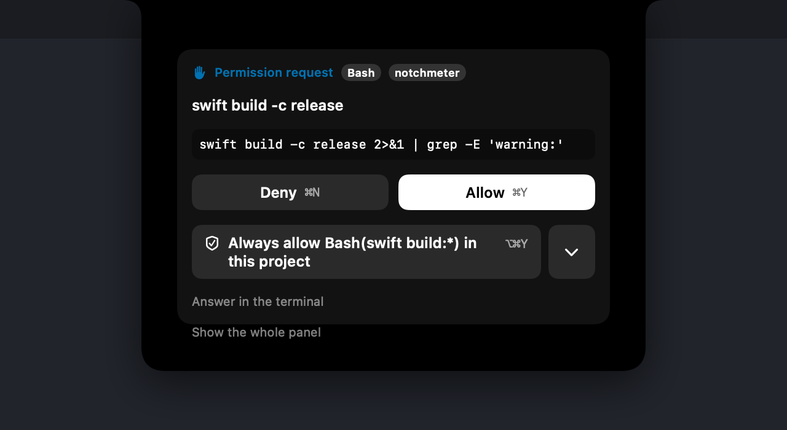

Claude Code notifications not working?
When Claude Code stops for a permission and nothing tells you, the fix is usually in your terminal, not in another app. Start there. If you then want more than a banner, this is what a hook adds, how to fix one that has gone quiet, and when you are better off without it.
The short answer
Claude Code sends a desktop notification on its own only in Ghostty, Kitty and iTerm2. In any other terminal, set preferredNotifChannel to "terminal_bell" or add a Notification hook. In iTerm2, allow escape-sequence alerts; inside tmux, turn on passthrough; and check that macOS lets the terminal notify at all. If notifications then arrive but you still lose track of which session is waiting, that is the gap a hook like Notchmeter's fills.
Step one: Claude Code's own notifications
Claude Code's terminal documentation describes when it notifies: "When Claude finishes a task or pauses for a permission prompt, and you appear to be away from the terminal, it fires a notification event." Two consequences follow. If you are looking at the terminal, no notification is expected. And whether the event becomes something you see depends on the terminal.
- Your terminal. "By default Claude Code sends a desktop notification only in Ghostty, Kitty, and iTerm2." In Apple's Terminal, Warp, or an editor's integrated terminal, add this to
~/.claude/settings.jsonto ring the terminal bell instead:{ "preferredNotifChannel": "terminal_bell" } - iTerm2 forwards the alert only once you allow it: Settings › Profiles › Terminal, tick Notification Center Alerts, then Filter Alerts and enable Send escape sequence-generated alerts.
- tmux swallows notifications unless
set -g allow-passthrough onis in~/.tmux.conf(thentmux source-file ~/.tmux.conf). - macOS. System Settings › Notifications › your terminal must be allowed, and a Focus may be holding it back.
- Hooks switched off.
"disableAllHooks": truein any settings file turns off every hook, and a project's.claude/settings.jsoncan override your user setting either way. If an administrator manages hooks through policy, only a managed setting can switch those off.
A Notification hook runs alongside the built-in notification rather than replacing it, which is why the same documentation suggests one for terminals that get no desktop notification.
What Notchmeter's hook adds
A banner says something happened. It does not say which of four sessions is waiting, it is gone once dismissed, and answering it still means finding the right terminal tab. The hook sends Claude Code's session events to Notchmeter, which keeps them where you can see them:
- A mark beside the notch. A white dot on the Claude ring while a session waits for your permission or your answer, with a count once more than one does, and a tick for ninety seconds after a turn longer than twenty seconds ends. The ring takes the blue that means needs you, not running out, and both marks stay if you turn the colour off.
- News in the notch. For four seconds the collapsed strip names the project and the reason (Needs approval, Question, Finished), with a glow under the notch.
- A list of sessions, grouped by project, the one that needs you first, each a click away from its terminal tab or pane.
- Answering from the notch. Allow, Deny or Allow always for a permission; pick the option for a question. The terminal shows its own prompt at the same time, and whichever you answer first wins.
- A banner and a sound per kind of wait: a permission, a question, and a plan ready to approve each sound different.


Codex, Gemini CLI and GitHub Copilot CLI each document an event for a wait, so their hooks light the same dot. Cursor documents none, so its ring shows the tick and never claims a wait it cannot see; since 0.7.6 a Cursor turn quiet for 45 seconds with nothing running is shown as a possible wait, worded as "may be" because a slow model step looks the same.
When Notchmeter's notification does not come
The dot on the ring is always drawn. The banner is held back on purpose in three cases, and each has a switch.
- A terminal or editor is in front. A session that has stopped for you still banners, but at most once every ten minutes per session, because Claude Code reports a permission prompt and never its answer, so a repository with no allow rules would otherwise banner at every prompt. A finished turn, and Claude Code's idle nudge, stay silent while a terminal or editor is frontmost. Stay quiet while a terminal or editor is in front (Settings › Notifications, on by default) turns that off.
- Quiet hours. They override all of it.
- The switch itself. Notify when an assistant waits for you, and macOS's own permission for Notchmeter, which is asked for when you turn the switch on and never at launch.
If the dot never appears either, the hook is not reaching the app. Settings › Integrations › Hooks says, per assistant, whether the entry is installed and whether it points at the copy that is running: Installed, but an entry is out of date and Installed but points at an old path each have a Repair button. Then try it by hand; with Notchmeter running this should print exit 0 at once and put a line in the log:
echo '{"hook_event_name":"Stop"}' | /Applications/Notchmeter.app/Contents/MacOS/Notchmeter --hook; echo "exit $?"
/usr/bin/log show --last 5m --info --predicate 'subsystem == "com.amirhackett.notchmeter" AND eventMessage BEGINSWITH "hook"' --style compactThe app accepts a hook only from a copy of Notchmeter whose code signature matches its own, so a development build next to an installed release is refused, and the log names the refused path (category == "hook-socket"). If Notchmeter --smoke reports the transport as stale, the socket is a leftover from a crash: relaunch the app.
When not to install it
A hook is a command Claude Code runs on every event you register it for. It is worth being sure you want one.
- You work in Claude's desktop app. Its documentation says it "sends an OS notification when a Code session finishes a task and you aren't currently viewing that session", and its sidebar can "filter sessions by status, project, or environment". If that is where your sessions live, you already have most of this.
- One session at a time, in a terminal that already notifies. The hook would add a mark and answering from the notch, at the cost of a process launch per event (about 13.5 ms each, measured for 0.7.0).
- You want no third-party command in
settings.jsonat all. Then do not add one. The meters and the Cost card do not need it; without one no session is listed at all, and the monitoring guide sets out exactly what you give up. - Cursor with third-party configs on. With Include third-party Plugins, Skills, and other configs, Cursor also runs the hooks in
~/.claude/settings.json, so with both entries installed every Cursor event arrives twice and its subagent count under-reports. Keep one of the two. - VS Code's Copilot agent mode. It reads
~/.claude/settings.jsonas one of its hook sources, so its sessions are counted on the Claude ring, and nothing documented in the payload tells them apart. - Settings your organisation manages. Ask first. A managed
disableAllHookswins over anything you add.
What the hook sends, and what it never does
Each event carries its name, the session id, the project folder's name (the repository's, for a git worktree), the branch and the permission mode. The first line of your prompt, at most 96 characters, crosses too, because the hook command does not read Notchmeter's settings; the app drops it on arrival unless Show what a session is working on is on, so with that off nothing of a prompt is kept anywhere. A permission request carries the tool's name and a bounded summary, never the raw input. The transcript path, the rest of the prompt and the notification text never leave the command. It all goes over a Unix socket on your Mac, not the network.
Everything fails open. If Notchmeter is not running, if you do not answer within the hold (two minutes by default), or if anything at all goes wrong, the command prints nothing and Claude Code asks in the terminal exactly as it always has.
Installing and removing it
Settings › Integrations › Hooks › Add to settings.json… merges the entries after copying your file to settings.json.bak-yyyyMMdd-HHmmss beside it, and keeps every hook already there. Show snippet… gives you the JSON to paste yourself instead. The first launch offers this once, as a button; it is never done for you. To remove it, delete the groups whose command contains Notchmeter … --hook, or restore the backup.
Sources
- Anthropic, Configure your terminal for Claude Code, read 2026-09-24: the terminals that notify by default,
preferredNotifChannel, iTerm2 and tmux. - Anthropic, Hooks reference, read 2026-09-24: the Notification event and
disableAllHooks. - Anthropic, Claude Code desktop app, read 2026-09-24: its notifications and session sidebar.
- docs/hooks.md: every field the hook sends, the socket, the hold, the timings and the troubleshooting steps.